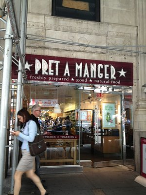
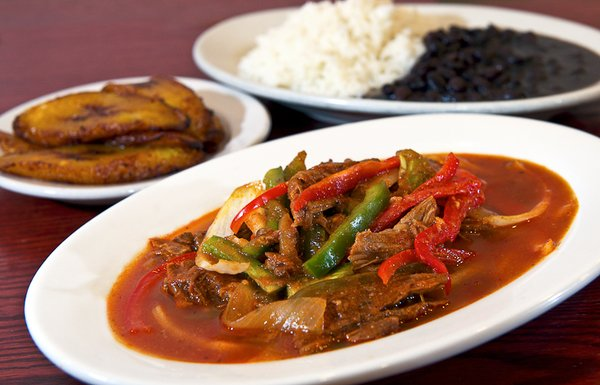
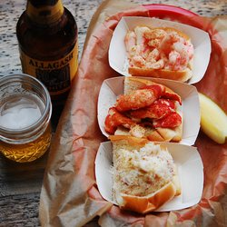
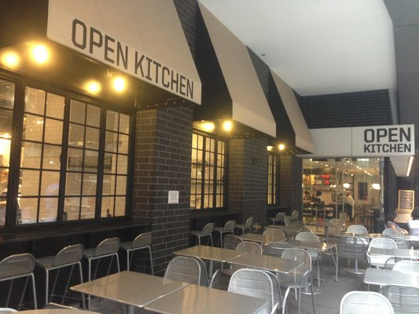
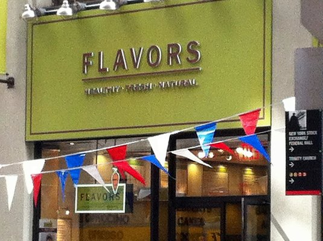
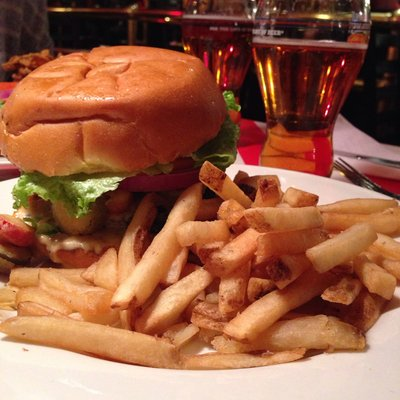
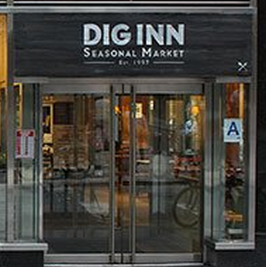

The GoGo Grill
(646)-425-1905
★ ★ ★ ★ ★
An oasis of excellent, delicious, and mostly healthy food in the bland, crappy lunch wasteland that is the Bowling Green/Battery Park neighborhood. I love these guys, and my whole office is hooked on their falafel as well as their kale salad.
Pret-A-Manger
(212) 344-0105
★ ★ ★ ★ ☆

I come to Pret basically all the time for lunch because the food is awesome and there is never a long line or wait to check out. Not to mention- the staff there are pure rock stars! Just the friendliest people ever, especially Anthony. They take their jobs seriously and are a pleasure to do business with.
Sophie's Cuban Cuisine
(212) 809-7755
★ ★ ★ ★ ☆

I am pretty sure I have shortened my lifespan by several years because of how frequently I ate here when I worked in the area. Seriously great lunch place. I haven't had anything bad here, but my favorite was the pork sandwich with fried plantains and that mysterious and delicious green sauce. Good prices too.
Luke's Lobster
(212) 747-1700
★ ★ ☆ ☆ ☆

Incredimazing. Lobsterlicious. Scintilobsterating.
Incredimazing. Lobsterlicious. Scintilobsterating.
Seriously. Must eat grub. Skip the shrimp and crab rolls. Double down on the lobster roll. The Maine craft beers and soft drinks are excellent as well.
Open Kitchen
(212)-785-5555
★ ★ ★ ☆ ☆

A wealth of high-quality choices for lunch including salad bar, mediterranean food, asian food, sandwiches, and meat/veggies. If you work nearby, this is the spot.
Justino's Pizzeria
(212) 797-9292
★ ★ ★ ★ ☆

Awesome NY Pizza in FiDi.
Stand up slice and very nice staff. I was very impressed on the first visit and will definitely making this my go to pizza place in my new hood.
Flavors
(212)-269-6100
★ ★ ★ ☆ ☆

Good for breakfast (bagels but limited choice, no everything or cinnamon raisin),sandwiches (over priced) croissants. The interior is nicely remodeled and very airy, they do have seating upstairs also. This place is also open on Sunday. Staff is not as friendly as I would have limed.
Wafels & Dinges
(866)-429-7329
★ ★ ★ ★ ☆
This is a damn good waffle. Sorry, gotta stay authentic - make that a damn good wafel. Got the Throwdown per recommendation of one of the helpful guys working the truck and I did not, and still do not many moons later, regret it one bit.
TGI Friday's
(212)-483-8322
★ ☆ ☆ ☆ ☆

I wish I could give this place zero stars. The service was beyond lacking. It was more like being ignored and then being expected to pay for it...
Dig Inn
Phone number (212) 785-1110
★ ★ ★ ☆ ☆
